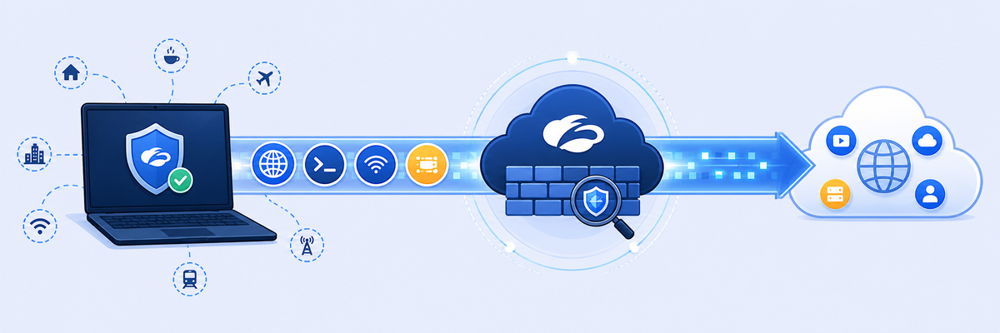

Lab 3: Forward Traffic with the Zscaler Client Connector
Scenario: As the Zscaler administrator, your next goal is to configure the Zscaler Client Connector (ZCC) to securely forward all user traffic to Zscaler for inspection and protection, whatever the protocol. This enables firewall functionality and secure internet access, and keeps users covered on any platform, both on and off trusted networks.
Objectives: By the end of this lab you will:
- Configure forwarding options to send all user traffic securely to Zscaler.
- Set up forwarding profiles and platform settings for Windows devices.
- Confirm that features such as Private Access, Internet Security and Digital Experience are enabled and working.
- Confirm the Corp Client PC traffic is forwarded to Zscaler and verify entitlements and settings.

A forwarding profile answers one question for every network the laptop might be on: how should traffic get to Zscaler, if at all? The app profile then decides who gets that forwarding profile.
- The guide insists on Z-Tunnel 2.0 instead of Z-Tunnel 1.0. What traffic would a 1.0 tunnel miss, and which later lab would break because of it?
- You set VPN-Trusted and Off-Trusted to Same as "On-Trusted Network". In a real company, why might you not want to tunnel everything when the laptop is already on the corporate (trusted) network?
- After you click Add on the Windows App Profile, ZCC might still show the old policy. What's actually happening between the console and the client, and how do you speed it up?
In this task, you will configure traffic forwarding so that all users send their traffic to Zscaler, whatever the protocol.
1 Log in to the Experience Center
- Go to
https://console.zscaler.comand authenticate with the student account:- Username:
student@<Student FQDN> - Password: the password you set at your first login in Lab 1.
- Username:
- Click Sign in.
2 Create the Forwarding Profile
- Go to Infrastructure > Connectors > Client > Forwarding Profile for Platforms.
- Click Add Forwarding Profile.
- Name the profile:
HandsOnLab - Scroll down. In the Windows Driver Selection section, select Packet Filter Based.
Note: If Zscaler Client Connector version 4.8 or higher is installed on Windows, the app defaults to the packet filter-based driver and ignores the Route-Based configuration option.
3 Set the ZIA forwarding action
- In the FORWARDING PROFILE ACTION FOR ZIA section:
- For On-Trusted Network, select Tunnel.
- For the Tunnel version selection, use Z-Tunnel 2.0.
- For VPN Trusted Network and Off-Trusted Network, tick the box next to Same as “On-Trusted Network”.
Note: Tunnel 2.0 is needed to capture all traffic and tunnel it to ZIA for Firewall functionality.
4 Set the ZPA forwarding action and save
- In the FORWARDING PROFILE ACTION FOR ZPA section:
- For On-Trusted Network, select Tunnel.
- For VPN Trusted Network and Off-Trusted Network, select Same as “On-Trusted Network”.
- Click Save.
5 Add the Windows App Profile
- In the left navigation panel, go to Platform Settings > Windows.
- Click Add Windows Policy under the App Profile section.
- Configure the following settings (leave any field not listed at its default):
- Name:
HandsOnLab - Rule Order: 1
- Status: Enable
- Forwarding Profile: select the HandsOnLab profile you created earlier.
- Install Zscaler SSL Certificate: On
- User Groups: Select All.
- Name:
- Click Add.
In this task, you will log in to the Zscaler Client Connector to confirm that the Corp Client PC is now protected by the app.
1 Open the Zscaler Client Connector
- On the Corp Client PC, in the Windows taskbar (bottom-right corner), click the Show hidden icons option.
- Select the Zscaler Client Connector icon and click Open Zscaler.
- In the Zscaler Client Connector console, log in with the student credentials:
- Username:
student@<Student FQDN> - Password: the one you set in Lab 1.
- Username:
- Click Sign in.
2 Verify Private Access settings
- On the Private Access page, confirm the following:
- Service Status: ON.
- Client and Broker IP addresses: populated.
Note: If you don't see ZPA or ZDX in Zscaler Client Connector, your user may not have the correct service entitlements. To check entitlements for the Student Admin user, go to Administration > Users in the portal, select the Student Admin user account and click the Edit icon. In the Edit User pane, go to the Entitlements section and confirm that ZPA and ZDX are assigned. The Broker IP address highlighted in the screenshot is only an example and may differ from the one in your own Zscaler Client Connector.
3 Verify Internet Security settings
- On the Internet Security page, confirm the following:
- Service Status: ON.
- Username: displays correctly.
- Total Bytes Sent / Received: these values go up as you load web pages.
4 Verify Digital Experience settings
- On the Digital Experience page, confirm that:
- Service Status: ON.
- Authentication Status: Authenticated.
- Username: displays correctly.
5 Verify the applied App Policy
- On the More page, confirm that:
- App Policy: HandsOnLab
Note: If the updated policy HandsOnLab doesn't show in Zscaler Client Connector (ZCC), click Update Policy under the More tab in ZCC to force a policy refresh. Wait a few seconds and check again.
6 Verify traffic forwarding
- Go to
https://ip.zscaler.com - Confirm that you are reaching the Internet through a service edge geographically close to the user.
Note: The Service Edge location in the results will usually be one geographically close to the user.
First use More → Update Policy and wait a few seconds. If App Policy still isn't HandsOnLab, check that the Windows policy is Enabled, has Rule Order 1, uses the HandsOnLab forwarding profile and targets All user groups. If Private Access or Digital Experience is missing, check the Student Admin user's ZPA/ZDX service entitlements as described in the note above.
HandsOnLab, rule 1, all groups, install the SSL cert). Proof it works: ZCC shows Private Access / Internet Security / Digital Experience ON, App Policy HandsOnLab, and ip.zscaler.com says you're behind Zscaler.